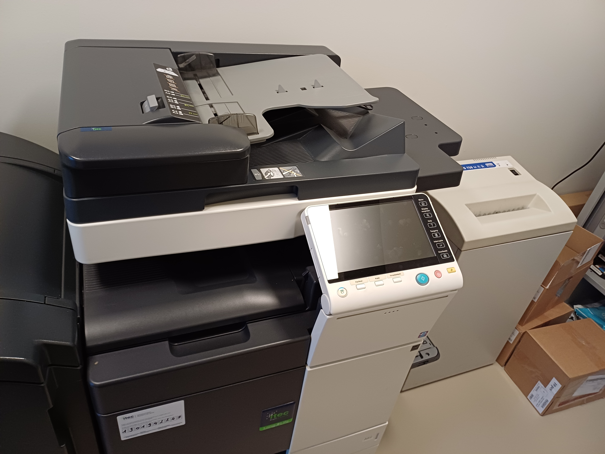
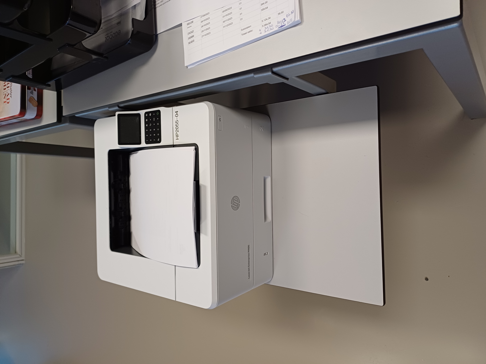

Voormiddag
De dag begon wanneer ik de opdracht kreeg om geprinte bladen te overhandigen aan Brigitte en Karin. Er zijn 2 printers in het bedrijf: 1 boven op de boekhoudafdeling, en 1 op het gelijkvloers (de benedenverdieping). De printer beneden dient om scans af te printen, de printer boven kan dienen om allerlei documenten af te drukken.
 Dagelijks moeten de bankuittreksels verwerkt worden. Ik mocht dit een paar keer doen, en vond dit wel interessant om te doen. Om 9.30 uur somde Karin mogelijke problemen op in het leven van een boekhouder. Zo leerde ik dat er een loyaliteit richting goede klanten bestaat (bv. het al dan niet toekennen van een kredietlimiet). Karin gaf ook meer uitleg omtrent gevolgen voor een bedrijf na het faillissement van een klant. Ze lichtte eveneens de takenverdeling op de afdeling toe. Om 10 uur verwerkte Brigitte nog een paar facturen. Om op tijd te kunnen anticiperen op te lang openstaande facturen, is het belangrijk om de dagelijks inkomende facturen te boeken. Vervolgens toonde Brigitte nog een handvol aangiftes. De eerste aangifte die ze liet zien was de Intrastat-aangifte, de aangifte waar al de intracommunautaire verrichtingen op staan. Ik kreeg ook de btw- en UBO-aangifte te zien. Ook legde Brigitte uit hoe Ecobat voldoet aan de GDPR-wetgeving. Als laatste activiteit van deze voormiddag hielp ik mee met de afwas. Niet altijd even leuk, maar ik was blij dat ik iets kon doen.
Middagpauze
Tegen het middaguur realiseerde ik me dat er een duidelijke taakverdeling heerst in Ecobat. Zowel op professioneel (op de boekhoudafdeling worden de taken tussen Brigitte en Karin eerlijk verdeeld) als niet-professioneel vlak (er is een beurtrol voor het schoonmaken van de koffiemachine). In de refter viel mijn oog op een lijst wie wanneer vakantie heeft. Ecobat draagt zorg voor haar werknemers, dat kon ik afleiden uit opgehangen affiches (bv. er is bv. een meldpunt voor onesthetisch gedrag op de werkvloer, ziektepreventie...). Het bedrijf evalueert haar werknemers ook, zo heeft Fatima vandaag respectievelijk Brigitte en Karin op gesprek laten komen.